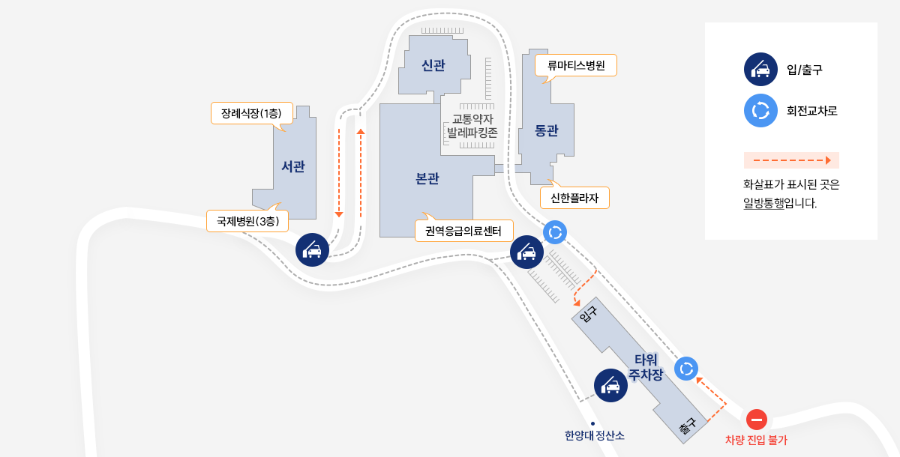

지하철·버스·셔틀버스·주차 안내입니다. 초음파실은 본관 3층 영상의학과에 있습니다.
주소(04763) 서울특별시 성동구 왕십리로 222-1
대표전화02-2290-8114
진료시간평일 08:30~17:30토요일 08:30~12:30
지하철
| 역 | 출구 · 이동 방법 |
|---|---|
| 2호선한양대역 | 1번 출구 → 한양대학교 정문까지 400m (도보 약 5분) 또는 셔틀버스 1호차 |
| 2호선5호선왕십리역 분당선·경의중앙선 | 6번 또는 13번 출구 → 750m (도보 약 15분) 6-1번 출구 → 셔틀버스 2·3·4호차 |
버스
| 정류장 | 버스 번호 |
|---|---|
| 병원 후문 · 사근파출소 앞 04232 / 04233 | 지선버스 4211 |
| 한양대부속고등학교 04125 / 04126 | 지선버스 2013 · 간선버스 121 |
| 한양대학교 정문 · 한양대정문앞 04130 | 간선버스 121 |
| 마을버스 | 평일 06:30~23:30 (10~15분 간격) · 토·일·공휴일 06:30~23:30 (12~16분 간격) |
1호 · 한양대역 순환
- 평일 08:00 ~ 17:20 (12분 간격)
- 토요일 08:30 ~ 12:10 (12분 간격)
- 일·공휴일 운행 안 함
본관 3층 응급실 앞 → 정문 → 후문 → 본관 1층
2·3·4호 · 왕십리역 순환
- 평일 08:00 ~ 17:05 (8분 간격)
- 토요일 08:30 ~ 12:05 (25분 간격)
- 일·공휴일 운행 안 함
본관 3층 응급실 앞 → 후문 → 왕십리역 6-1번 출구 맞은편 → 노인복지회관 → 후문 → 본관 1층
운행시간은 도로 사정에 따라 지연될 수 있습니다. 약국을 이용하실 분은 정문이나 후문에서 하차하시면 됩니다.
초음파 검사(각종 검사) 시 4시간 무료주차 · 당일 진료비계산서/영수증을 제시하세요. 확인 필요
주차요금 (위치: 주차타워 1층)
| 무료시간 | 입차 후 10분 무료 |
| 30분까지 | 2,000원 |
| 30분 초과 | 10분당 500원 |
| 선불 기간권 | 1일(24시간) 20,000원 · 30일 120,000원 |
주차요금 문의 02-2290-8557 · 무인 정산기: 본관 1·3층, 동관 1층, 타워주차장 1층
무료주차 (주요 항목)
| 외래 진료 | 4시간 |
| 각종 검사 | 4시간 |
| 핵의학과 검사 등 | 8시간 |
| 입원 · 퇴원 | 입원당일 24시간 · 퇴원당일 24시까지 |
| 진료예약·서류수정 | 1시간 (주차확인서) |
※ 당일 진료비계산서/영수증 제시 · 상세 기준은 병원 주차안내 참고
